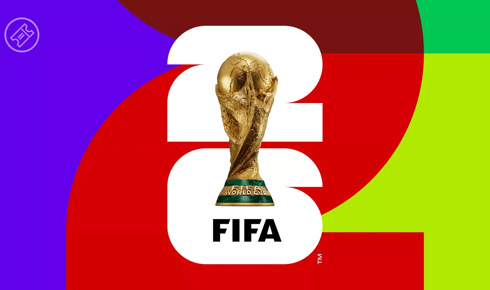

Bienvenido a TIKITAKA
Mundial de Fútbol 2026 Mexico USA Canada
La Copa Mundial de Fútbol de 2026 será la vigésima tercera edición de la Copa Mundial de Fútbol organizada por la FIFA.
Será la vigésima tercera edición de la Copa Mundial de Fútbol organizada por la FIFA y se desarrollará del 11 de junio al 19 de julio de 2026
Esta será la primera ocasión en que cuarenta y ocho selecciones participen en la fase final
El Mundial 2026 se realizará en tres países (México, Estados Unidos y Canadá) porque así lo decidió el Congreso de la FIFA en 2018, marcando la primera vez que un torneo de esta magnitud se celebra en múltiples sedes. Esta decisión se tomó también en parte debido al aumento en el número de selecciones participantes

Ultimos Ediciones
| Año | Campeón | Subcampeón |
|---|---|---|
| 2018 | Francia | Croacia |
| 2014 | Alemania | Argentina |
| 2010 | España | Países Bajos |